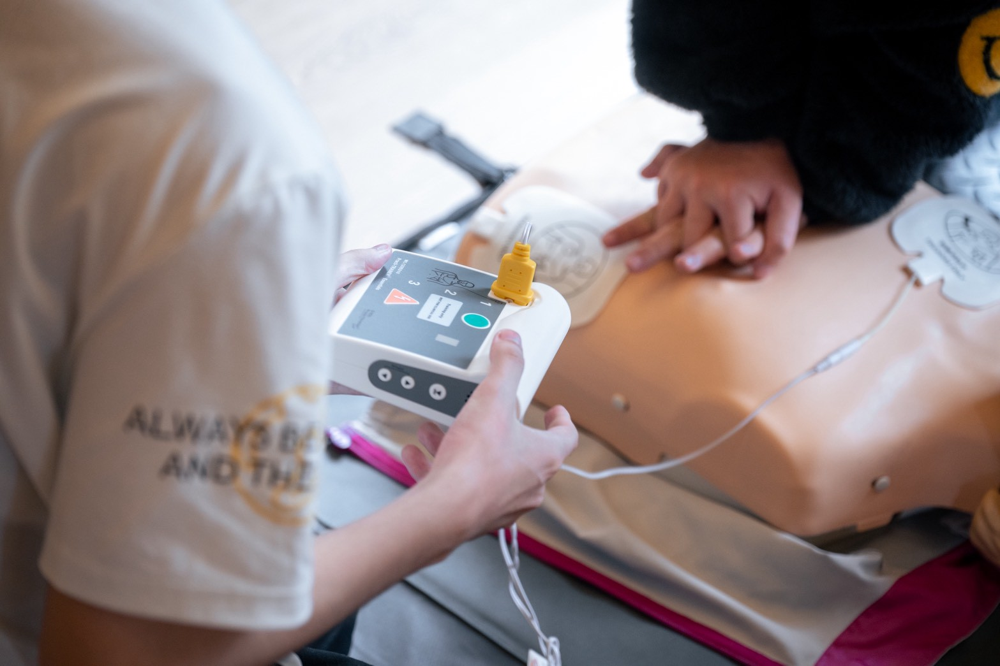
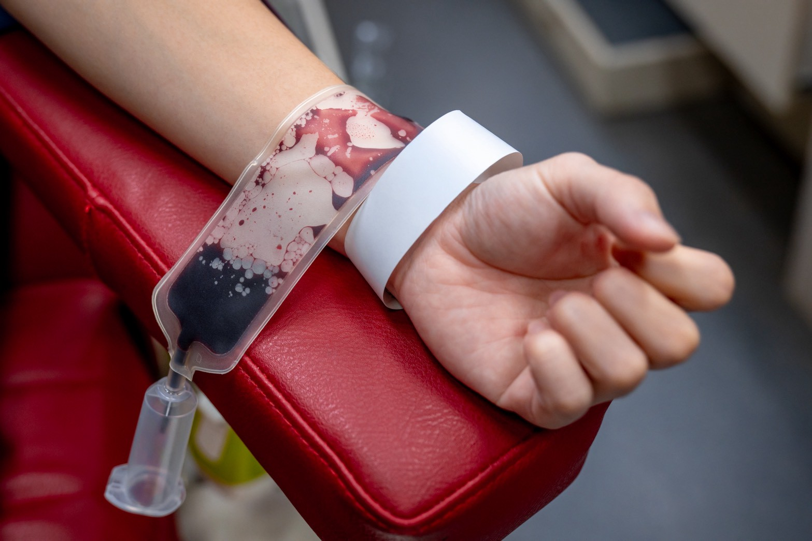
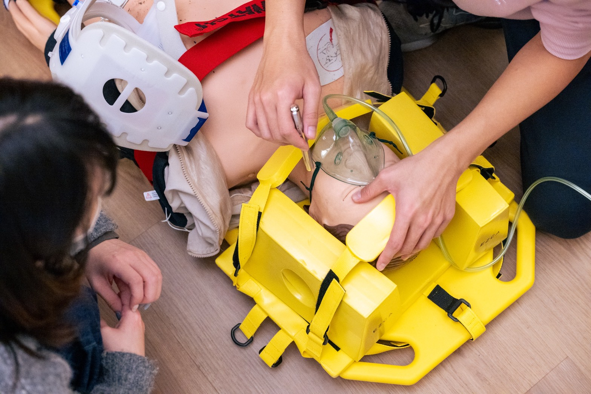
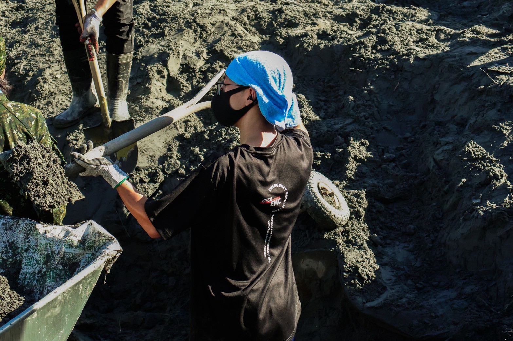
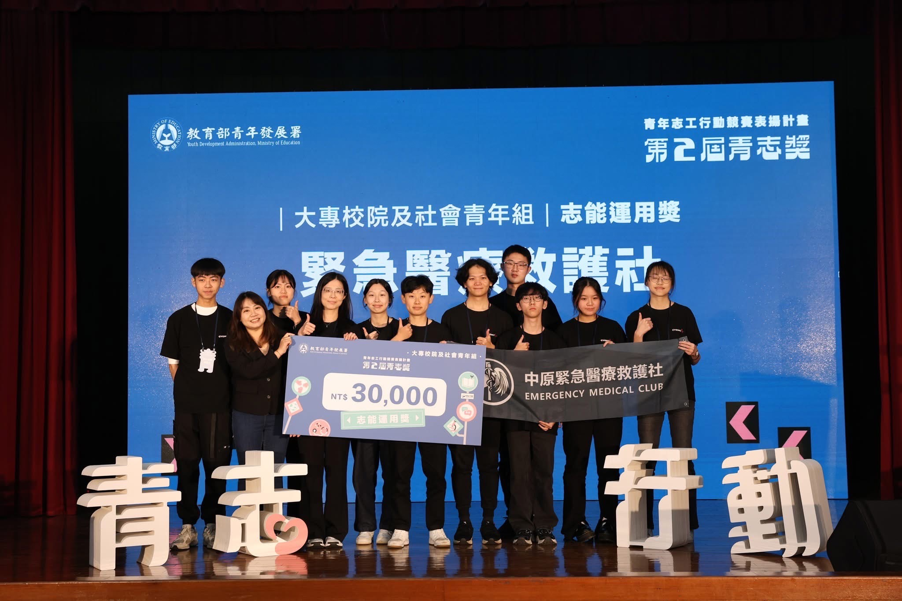

急救推廣
First Aid Promotion
從基礎CPR+AED到進階傷口處置與運動貼紮等課程，也將急救帶往經濟不利新住民子女與樂齡族群。不只教導專業技術，更強調團隊協作與實作經驗，確保面對突發緊急狀況時，能冷靜應變並提供正確的援助。
詳細介紹🔗

志工服務
Volunteer Services
定期舉辦校內捐血活動、積極參與校內外各類活動救護等活動。透過實際的救護站支援，致力將專業知識轉化為實質的社會貢獻，透過服務他人的過程展現社團的核心價值，並深化校園安全守護的核心精神。
詳細介紹🔗

人才培育
Talent Education
定期舉辦EMT-1初級救護技術員考證中原專班，透過 56 小時紮實的理論教學與小組模擬演練，協助社員順利取得國家級專業證照。從在校學生蛻變為合格的救護技術員，共同提升社會整體救護能量。
詳細介紹🔗

救護實踐
Ambulance Practices
將課堂所學運用於模擬情境，強調現場評估與有效溝通。透過模擬實踐與服務經驗獲得自我成長，凝聚社員間的向心力，並持續傳遞守護生命的熱情，讓救護精神不再只是口號，而是化為真實的行動。
詳細介紹🔗

特色活動
Special Programs
適逢社團十週年，舉辦系列紀念活動並邀請歷屆學長姐回娘家，見證從草創熱血到今日系統化訓練的成長軌跡。這不僅是慶典，更是救護精神的深度傳承，讓我們帶著初衷，繼續邁向下一個輝煌十年。
詳細介紹🔗

榮譽事蹟
Honors and Achievements
憑藉嚴謹的訓練與卓越的服務績效，榮獲多項比賽肯定。這不僅是對社團組織架構與社會公益貢獻的最高認可，更激勵我們持續深耕急救教育，讓所有人皆有守護生命的能力，共同成為生命的守護者。